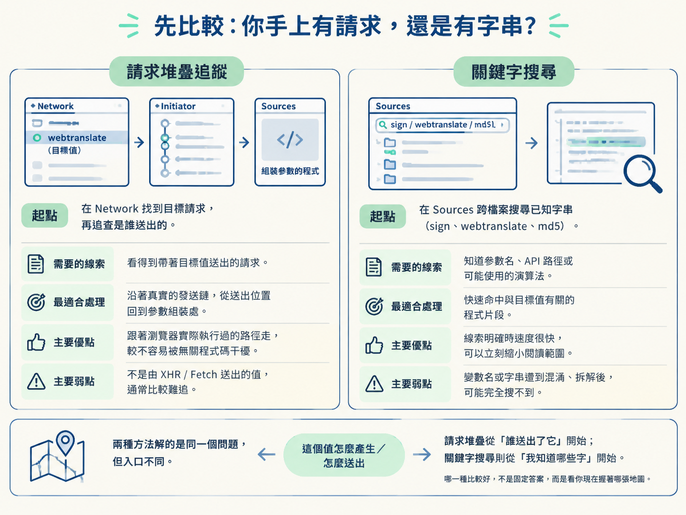
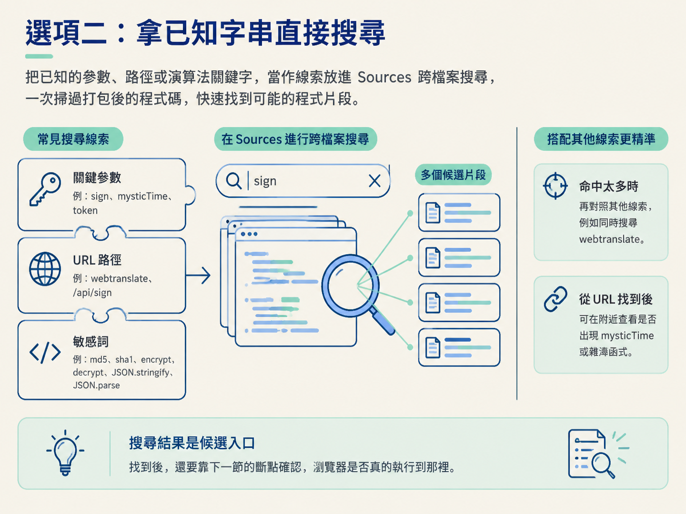
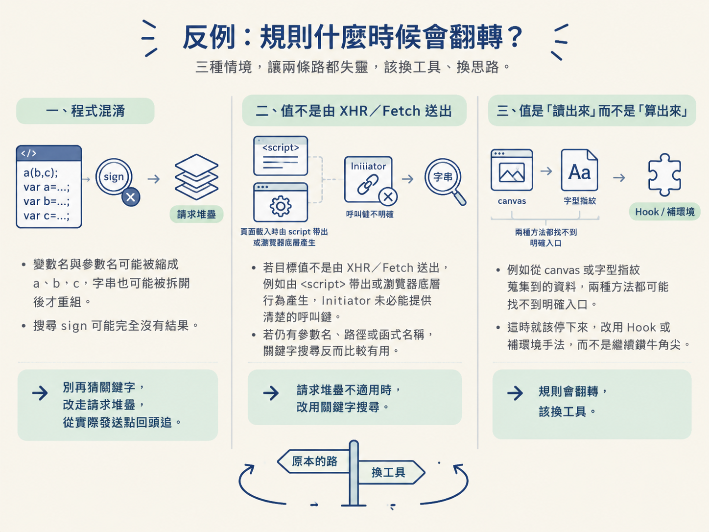

你已經在 Network 面板抓到有道翻譯的 webtranslate 請求，也看見 form data 裡那串 32 位十六進位的 sign。目標就在眼前，但打開 Sources 面板後，迎面而來的卻是被打包、壓縮過的 JavaScript，動輒上萬行。
這正是從「抓到請求」走向「逆向程式」時最容易卡住的地方：值看得見，卻不知道該從哪一行開始追。
這時不用硬著頭皮逐行閱讀。你真正要做的決定只有一個：手上的線索比較適合走請求堆疊追蹤，還是關鍵字搜尋？前者順著實際送出的請求往回找，後者則拿已知字串直接切進程式。
學習目標：根據目前握有的線索，在這兩種入口定位方法之間做出選擇，找到「產生這個值」或「送出這個值」的候選程式。
前置條件：你已經知道加密值可能出現的三個位置（Step 1），會在 DevTools 的 Network 面板找到請求，也會在 Sources 面板搜尋字串。
| 比較項目 | 請求堆疊追蹤 | 關鍵字搜尋 |
|---|---|---|
| 起點 | 在 Network 找到目標請求，再追查是誰送出的 | 在 Sources 跨檔案搜尋已知字串 |
| 需要的線索 | 看得到帶著目標值送出的請求 | 知道參數名、API 路徑或可能使用的演算法 |
| 最適合處理 | 沿著真實的發送鏈，從送出位置回到參數組裝處 | 快速命中與目標值有關的程式片段 |
| 主要優點 | 跟著瀏覽器實際執行過的路徑走，較不容易被無關程式碼干擾 | 線索明確時速度很快，可以立刻縮小閱讀範圍 |
| 主要弱點 | 不是由 XHR／Fetch 送出的值，通常比較難追 | 變數名或字串遭到混淆、拆解後，可能完全搜不到 |
兩種方法解的是同一個問題，但入口不同。請求堆疊從「誰送出了它」開始；關鍵字搜尋則從「我知道哪些字」開始。哪一種比較好，不是固定答案，而是看你現在握著哪張地圖。

sign 該怎麼找？先回到眼前的真實案例。你已經在 Network 面板看見 webtranslate 請求，也知道 form data 裡有 sign。因此，兩條路其實都能嘗試。
如果你最確定的線索是「這個值確實隨著某個 XHR 或 Fetch 請求送出」，請求堆疊通常是穩定的入口。
在 Network 面板點開 webtranslate 請求，查看 Initiator，也就是請求的發起來源。這裡會顯示相關的呼叫鏈，讓你看見真正送出請求的函式，以及一路呼叫到這裡的程式。
點選堆疊中的程式位置，DevTools 會直接跳到對應的原始碼。接著觀察發送函式收到哪些參數、資料在哪裡被組裝，再沿著呼叫關係回頭找 sign 第一次出現或被算出的地方。
這條路像沿著包裹上的寄件紀錄回查：你不必先知道寄件人的名字，只要請求真的從瀏覽器送出去，就有機會從發送點找到上游。
如果你已經知道參數名、API 路徑，甚至猜得到可能使用的演算法，關鍵字搜尋通常更快。Sources 面板可以跨檔案搜尋，一次掃過網站載入的打包程式。
| 線索類型 | 適合搜尋的內容 | 例子 |
|---|---|---|
| 關聯 key | 參數名稱或變數名稱 | sign、mysticTime、token |
| URL 路徑 | 目標 API 的網址片段 | webtranslate、/api/sign |
| 敏感詞 | 常見演算法或序列化函式 | md5、sha1、encrypt、decrypt、JSON.stringify、JSON.parse |
以有道翻譯為例，可以搜尋 sign，看看它在哪裡被指定或放進請求資料；也可以搜尋 webtranslate，直接找出組裝並送出該請求的程式。
如果你根據 32 位十六進位的外觀，懷疑處理流程與 MD5 有關，也可以搜尋 md5。搜尋結果不是最後答案，而是候選入口；找到之後，還要靠下一節的斷點確認瀏覽器是否真的執行到那裡。
這些線索也能搭配使用。只搜 sign 命中太多，就再對照 webtranslate；從 URL 找到請求組裝處後，也可以在附近查看是否出現 mysticTime 或雜湊函式。

不用背一長串規則。打開 DevTools 後，依序問自己這幾個問題：
md5，或看到結尾帶等號的 Base64 字串時，往編碼或加密相關的敏感詞查找。當兩種線索同時存在時，可以先搜尋關鍵字，快速圈出幾段候選程式；如果搜尋不到，或結果太雜，再從請求堆疊鎖定真正的發送點。兩條路不是互斥的競爭者，更像手電筒與導航：一個照亮附近，一個確認方向。
如果網站做了程式混淆，關鍵字搜尋的優勢可能立刻消失。變數名與參數名可能被縮成 a、b、c，字串也可能被拆開後才重組。這時搜尋 sign 可能完全沒有結果。
碰到這種情況，不要繼續猜更多關鍵字。只要目標值仍透過 XHR／Fetch 送出，就改走請求堆疊，從實際發送點回頭追。
反過來說，請求堆疊也不是萬用工具。如果目標值不是由 XHR／Fetch 送出，例如頁面載入時直接由某段 <script> 帶出，或由瀏覽器底層行為產生，Initiator 未必能提供清楚的呼叫鏈。這時若手上還有參數名、路徑或函式名稱，關鍵字搜尋反而比較有用。
還有一類值根本不是「算出來」，而是「讀出來」。例如從 canvas 或字型指紋蒐集到的資料，兩種方法都可能找不到明確入口。這時就該停下來換工具，改用後續章節的 Hook 或補環境手法，而不是在同一條路上繼續鑽牛角尖。

有明確字串，就先搜尋參數名、URL 路徑或敏感詞；看得到目標請求，就用請求堆疊確認真正的發送鏈。搜尋被混淆擋住時改追堆疊；請求不是由 XHR／Fetch 送出時，則改找字串或使用其他攔截手法。
找到候選程式後，下一步不是繼續用眼睛猜，而是讓程式停在關鍵位置，親眼確認值如何產生。下一節會比較行斷點、事件監聽斷點與 XHR 斷點，看看不同情境該選哪一種。